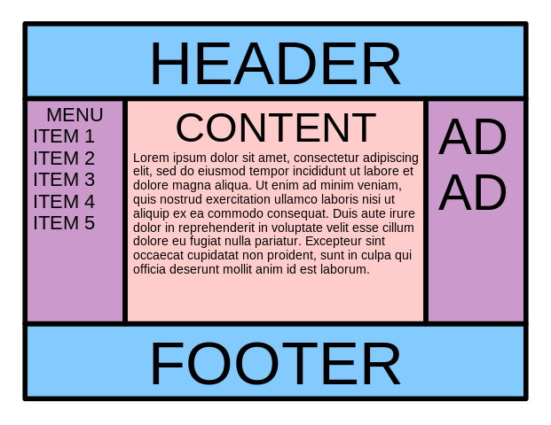

CSS (Cascading Style Sheet)

종속형 시트 또는 캐스케이딩 스타일 시트(Cascading Style Sheets, CSS)는 마크업 언어가 실제 표시되는 방법을 기술하는 스타일 언어(style sheet language)로, HTML과 XHTML에 주로 쓰이며, XML에서도 사용할 수 있다. W3C의 표준이며, 레이아웃과 스타일을 정의할 때의 자유도가 높다. 기본 파일명은 style.css이다. 마크업 언어(ex: HTML)가 웹사이트의 몸체를 담당한다면 CSS는 옷과 액세서리처럼 꾸미는 역할을 담당한다고 할 수 있다. 즉, HTML 구조는 그대로 두고 CSS 파일만 변경해도 전혀 다른 웹사이트처럼 꾸밀 수 있다.
출처 : 위키백과
CSS 레이아웃
성배는 웹 페이지 레이아웃으로, 스타일 시트로 정의 된 여러 개의 동일한 높이 열이 있습니다. 일반적으로 요구되고 구현되지만 수년 동안 사용 가능한 기술로 구현할 수있는 다양한 방법에는 모두 단점이있었습니다. 이로 인해, 최적의 구현을 찾는 것은 어려운 성배를 찾는 것과 비슷했습니다.